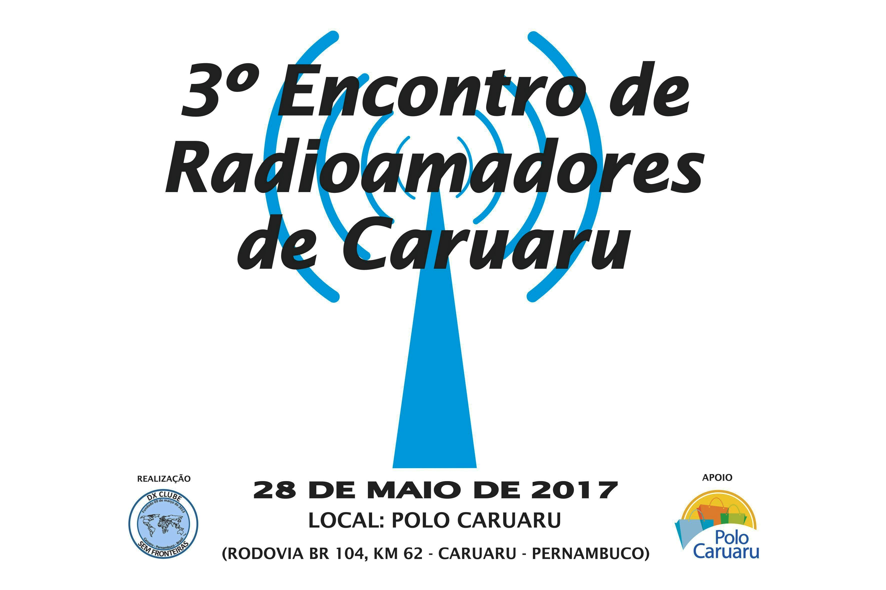

Evento
-

O Encontro terá:
- Palestra- Exposição de Rádios
- Feirinha de Rádios e Equipamentos
Kit do Encontro
Kit do encontro (camisa personalizada do evento), valor R$ 25,00;O Kit poderá ser solicitado até dia 13/05/2017, após esta data não poderemos mais atender os pedidos.
Para confirmar presença e aquisição do Kit visite o link AQUI.
OBS: AS CAMISAS SOLICITADAS PELOS AMIGOS DE OUTRAS CIDADES E ESTADOS SERÃO ENTREGUES NO DIA DO EVENTO.
O valor do kit poderá ser depositado na seguinte conta:
Favorecido: ANTONIO AVELINO DA SILVA
Banco: Banco do Brasil
Agência: 5742-8
Conta Corrente: 11987-3
Operação: 001
Sobre o Local do Encontro
- A 135 km do Recife e sete minutos do centro de Caruaru, o Polo Caruaru está situado no km 62, às margens da BR 104. Todos os dias, o empreendimento recebe milhares de compradores. Fundado em 2004, possui mais de 300 lojas dos mais variados segmentos. Vestuário, sapatos, acessórios, artigos em couro e artesanato são alguns itens que podem ser encontrados pelos visitante.- O Polo Caruaru conta com uma infraestrutura de 64 mil m² de área coberta. Também dispõe de dois espaços para a realização de eventos, um com 5.111m², outro com 660 m². Os ambientes são cobertos e podem receber feiras, exposições, festas e eventos em geral.
- No Polo contamos com restaurantes e lanchonetes (Praça de Alimentação), quiosques de lanches e sorvetes.
- O estacionamento com seis mil vagas e caixas eletrônicos são outras características que proporcionam comodidade aos visitantes.
Horário
Das 09h às 16hOrganização:
Antonio Avelino (PU7RAZ)(81) 99257-1734 (Claro) / 99741-3846 (Tim) (whatsapp)
E-mail: dxclubesemfronteiras@hotmail.com
Elias Lemos (PY7EEL)
(81) 99142-9425 (Claro) / 99575-6351 (Tim)